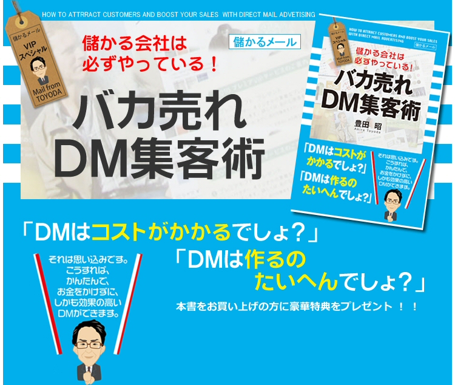
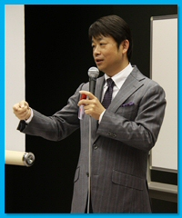
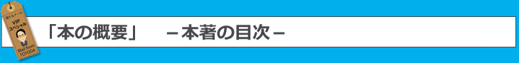
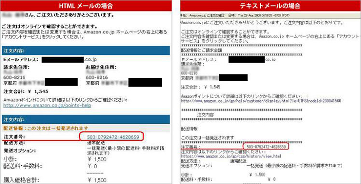
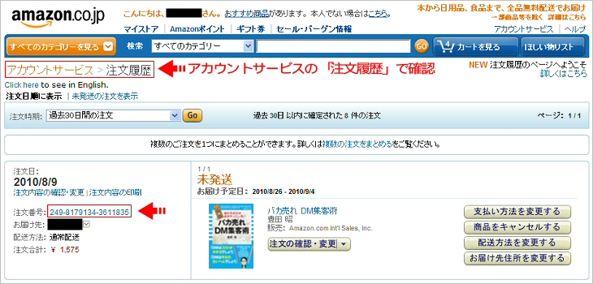

 |
|
これほどまでネットとリアルをバランスよく展開し、 ビジネスを成功させている人は、豊田氏以外にいないかもしれません。 いや、バランスがいいのではなく、 ネットもリアルも群を抜いたると言った方が正しいでしょう。 ズバリ！豊田氏の、その成功の秘訣は 仮説→実験→検証を繰り返してきたことにあると私は見てます。 これがビジネスを成功させる要素として 必要不可欠であることは、 いまさら言うまでのことはありませんが、 豊田氏のその実践の緻密さと継続力は圧倒的です。 たとえば、 反応率の良いホームページを作るには 「タイトルを変えたことでクリック率はどう変わったか？」 「文章を変えることでページ滞在時間はどう変わったか？」 など仮説→実験→検証を繰り返していくことだというの、 あまりに基本的なこと。 ただこれを毎日 ３年、４年、５年とやり続けられるでしょうか。 だれもが知ってはいるが、 だれもできないことをやり尽してしまうのが、 豊田氏のずば抜けたところです。 それはホームページに限らず、 ＤＭなど販促ツールすべてにおいてもです。 今回、豊田氏が出版した 「バカ売れＤＭ集客術」は どのような内容であるかは、もう想像がつくことでしょう。 これからＤＭなどの販促ツールを作成しようと考えている人が この本に書いあることを忠実にやれば ５年間起き得る失敗を回避して実践でてきしまうということです。 |
|
木戸一敏（きど かずとし） 営業コンサルタント。研修・セミナー講師。モエル(株)代表取締役。 東北電力や日本教育新聞社、日新火災海上保険、第一生命、住友生命、 アリコジャパン、東京・諏訪商工会議所、NPO法人営業実践大学、 日本経営合理化協会、東京中小企業家同友会、 業界最大手住宅設備メーカーなど多数の研修・講演実績を持つ。 3年間で250社を超える中小企業が参加する経営者組織「モエル塾」を主宰。 『Gainer』(光文社)、『THE21』(PHP研究所)、 『BigTomorrow』(青春出版社)など特集記事多数。 著書に、 『質問のルール』(明日香出版社)、 『みとめの3原則』(こう書房)、 『なぜか挨拶だけで売れてしまう営業法』 『売れる営業トークにはたったひとつの理由がある』、 アマゾン総合ランキング1位を92時間以上独占した 『小心者の私ができた年収1200万円獲得法』(いずれも大和出版)がある。 | 木戸一敏 ブログ 『集客しないで売上げ９倍！ 「ＭＩＴＯＭＥ３」営業』 http://ameblo.jp/mitome3/ |
|
豊田社長とは出会った瞬間意気投合し、 とても楽しいおつきあいをしているのですが、 それは私には豊田社長のやっていることのスゴさが手に取るようにわかり、 彼の存在がおもしろくて仕方ないからです(*^_^*) ご存じのように、豊田社長は長年「ＤＭ」業界で生きてこられた方です。 近年、ＤＭはネットに押され「古いマーケティング手法」 のように思われる向きもありますが、豊田社長は知っているのです！ 儲かっている会社はみな、ＤＭを上手に使っていることを…。 ここだけの話ですが、今、豊田社長は 「経営コンサルタントの駆け込み寺」的な存在になっています。 顧問先の業績が伸び悩んでいるとき、マーケティングの切り札として ＤＭをどう使ったらいいか、みな豊田社長のもとに相談に来るのです。 じつはこの本には、そうした生のやりとりが惜しげもなく公開されています。 もうホントに「ここまで書いていいのかっ!?」という内容なんです(*^^)v 。 そんな「知る人ぞ知るマーケティングの大家」の処女作を 読まないわけにはいきませんよね。 最低でも一社に一冊、ＤＭの教科書として永久保存版的に 備えておくことをオススメします。 |
|
石原 明（いしはら あきら） 経営コンサルタント 日本経営教育研究所代表 1958年静岡県生まれ。 ヤマハ発動機株式会社を経て、85年、外資系教育会社日本代理店に入社。 翌年にはセールス部門で日本１位の成績を収める。 以後世界約6万人のセールスマンの中で常にトップクラスの実績を上げるほか、 セールス・マネージャーとして年間を通して最高の成果を発揮した 営業管理職に贈られる「セールス・マネージャー世界大賞」を受賞。 研修講師としても約200社の研修を担当した実績を持つ。 95年、株式会社日本経営教育研究所を設立し、 経営コンサルタントとして独立。 各社の顧問および幹部教育、執筆および講演活動などで活躍中。 勝てるビジネスモデルと売れる仕組みの発想法を学ぶ勉強会 『高収益TOP3%倶楽部』を主宰し、 発足以来3500社を超える企業経営者が学んでいる。 経営者にとって良質な情報を発信し続けることは 最高のフォローであると考え、 毎週月曜朝9時にメールマガジンを配信するほか 、 『ブログ・経営のヒント』を更新中。 ポッドキャスト番組『経営のヒント＋（プラス）』 も好評を得ている。 代表著書 『営業マンは断ることを覚えなさい』（明日香出版社） 『気絶するほど儲かる絶対法則』（サンマーク出版） 『社長、「小さい会社」のままじゃダメなんです! 』（サンマーク出版） 『「成功曲線」を描こう。』（大和書房） （著作全１１作） |  石原 明.com http://www.ishihara-akira.com/ |
|
最近、大手から個人企業の方まで、ＤＭを発送する会社が増えてきています。 理由は、規模が大きくなるとネットでの広告掲載場所がなくなる、 メールでの集客率が極めて悪くなった、ネットでリピートさせるのが難しくなった等等です。 そのような中、他社からマネされにくく、一度反応の良いものを作れば 後はまねされにくく、継続的に利益を出しやすいＤＭに注目が集まってきています。 しかし、実際にＤＭを出すとなると、費用もかかり、敷居が高いと認知されているも事実です。 １ 費用のかからないＤＭ ２ 継続的に利益を出し続けている会社がやっているＤＭの作り方 を中心に誰でも、簡単に作成出来るように細かくお伝えしたくこの本を書きました。 |
 |
|
第１章
コストなしで売上倍増したDMとは？
1 これが実物！私の会社のゼロコストDMはこれだけ 16 2 DMを商品に同封するだけで、売上が2倍になった 20 3 同じダイエットクッキーを販売しているのに1社だけが生き残った 22 4 「シェイクもいかがですか」とおすすめするのはタダ！ 24 5 チラシとDMの違いは、たった1行だけだった 26 6 にんじん1本が最高のDMになった 29 7 製造業だからこそ、ゼロコストDMを活用できる 31 8 士業の先生もゼロコストDMを活用できる 34 9 リストがなくてもゼロコストDMはできる！ 36 コラム1 DMで起死回生！ 独立後、お客様獲得に苦労したコンサルタントさん 39 第２章
ゼロコストDMはこう使え！
1 DMはコスト割れリスクがあるという誤解が流布している 42 2 売上アップのチャンスを逃すのはもったいない 45 3 資料請求で単価を上げる方法がある 48 4 松竹梅をつくれば、顧客単価が上がる 50 5 お友達紹介カードで簡単に売上がアップする 52 6 ネット時代だからアナログなDMが見直されてきている 56 7 DMはマネされにくい 59 コラム2 メルマガが届かなくなって、 売上が落ちたネットショップがDMを始めたわけ 63 第３章
ひな形で簡単、ゼロコストDMを作ろう
1 穴埋め方式でゼロコストDMを作ろう 66 2 DMは「誰に」を最初に書こう 69 3 読んでもらえるキャッチコピーには3つのポイントがある 72 4 キャッチコピー下で読み手の気持ちを代弁しよう 78 5 商品説明はアピールでなくメリットで語る 80 6 理由づけで信頼度をアップさせる 82 コラム1 DMで起死回生！ 独立後、お客様獲得に苦労したコンサルタントさん 39 第４章
反応率が上がるDMの作り方
1 反応率の高いDMで強い会社をつくる 88 2 紙のサイズ、色、厚さも戦略的に考えよう 90 3 開封率100％のDMが存在する！ 92 4 見込み客の悩みを知って、効果の高いキャッチコピーを作る 96 5 「もう１人のターゲット」を考えよう 100 6 このイラストを入れれば反応率が２割アップする！ 102 7 読んでもらえるDMにはちょっとした気遣いがある 104 8 やりたくなるけど、ちょっと待った！失敗するDMのデザイン 106 9 割引券より反応率が上がる券とは？ 111 10 長続きする会社はやっている！かわら版を送ろう 115 11 やはり手書きには絶大な効果がある 118 12 申し込みを促す工夫がお客様の行動を後押しする 121 コラム3 クチコミが起こる会社設立案内とは？ 124 | 第５章
DMの反応率を上げるために、
制作物以外にも注意を払う 1 反応率を上げる一番の秘訣は、リストにある 126 2 反応率が上がる、DM発送のタイミングがある 129 3 開封を促す仕掛けに工夫を凝らそう 131 4 商品に封入するとジワジワきくものがある 135 5 お客様の声のとり方、いかし方にはコツがある 137 6 開けてもらえて、コスト面でも有利な封筒はどれか？ 140 7 宛名ラベルにも、反応率アップの仕掛けをつくろう 142 8 エコをうたうならラベルは使わない 144 第６章 DMは2つに分ければ売上が倍増する
1 バクチDMを打っていませんか？ 150 2 DMテストはこのように行なおう 153 3 DMテストするために必要な発送数は何通か？ 156 4 DMに番号を入れておこう 158 5 DMテストのデータのとり方 162 6 DMテストは、このポイントから始めよう 165 7 手間に見合うかどうかテストする 175 8 反応が悪かったら思い切ってオファーを増やしてみよう 177 9 ゼロコストDMでデータをとってからローコストDMを試す 181 10 企画から製作、発送、効果測定まで一連で考えよう 184 11 DMを売上につなげるためにはデータをとり続けること 188 コラム5 「封入順はどうすればいい？」よくある疑問に答えます 191 第７章 効果的なDMのチェックポイント
1 完成DMをお客様のもとへ届ける、その前にこれをチェック！ 194 2 いきなり反応がゼロになった失敗とは？ 196 3 申し込み方法は徹底してスムーズになるように工夫する 198 4 担当者・営業時間で安心感をかもし出す 200 5 会社情報は忘れずに入れよう 202 6 一読して意味が通じるか？中学生に読んでもらおう 204 7 DMはチェックするほど良くなる 206 8 DMが完成しても出せない人が多いワケ 209 9 DM作成になかなかとりかかれない人は、キーワード探しをしよう 215 10 宛名リストはこう作る 217 11 発送方法の選択基準はこれだ！ 220 12 リアルな営業とのリンクを確認しよう 225 13 損益分岐点を明確にすれば、かけられるコストがわかる 227 コラム6 枚数チェックする機械を導入してわかったこと 231 おわりに 233 付録：DM発送の流れチェックシート 240 |
|
[著者略歴] 豊田 昭（とよだ・あきら） 株式会社メディアボックス代表取締役。 数々の失敗を重ね、1986年４月、運送会社を設立。 西濃運輸㈱との事業を開始。 印刷データと宛名データをメール添付すると、印刷から封入・宛名ラベル作成・ 全国配送までを一元化し、コスト抑えたシステムを確立。 現在一部上場会社から個人事業主までの3679件と取引を行い、 年間66％のリピート率、34％の紹介を得る。 その後、経費削減だけでなく売上を伸ばすＤＭ会社として、 コンサルタントやお客さんと多数のテストマーケティングを重ね、数々の実験データを集める。 感情や思い込みに左右されず、実務に特化し、 専門用語を使わない分かりやすい説明で即効性のある指導をおこなっている。 |
|
「石原明 × 豊田昭 対談 」 日本経営教育研究所株式会社 石原 明 |
|
ネットで売れる商品の見分け方 有限会社いろは 竹内謙礼 |
|
「ニュースレターを『あなたレター』に変えたら反応率１０倍アップの事実」 ～ニュースレターを出しても売り上げに直結しない５つの勘違い～ |
|
「売れる＆伝わる『文章の達人』養成講座」入門セミナー音声ファイル 有限会社エルム・プランニング 堀内伸浩 |
|
「ＤＭの信頼度を増す方法と、そのやり方」 株式会社アドバンスソフト・コンサルティング 河村 博行 |
|
コンテンツがパールナルブランディングを加速させる「パーソナル起業術」 アヴァンティ株式会社 山口俊晴 |
|
キャンペーン期間以外にお買い上げいただいてもプレゼントの対象にはなりません オンライン書店Amazon.co.jpから 『バカ売れ ＤＭ集客術』 を購入する 購入後、あなたのメールアドレスにアマゾンから注文確認メールが届きます。 その中で「注文番号」をご確認下さい。 ※注文番号はアカウントサービスからすぐ確認することが出来ます。   |